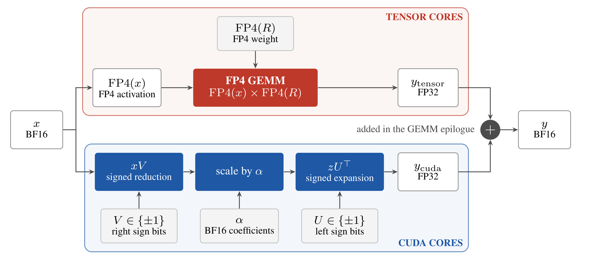
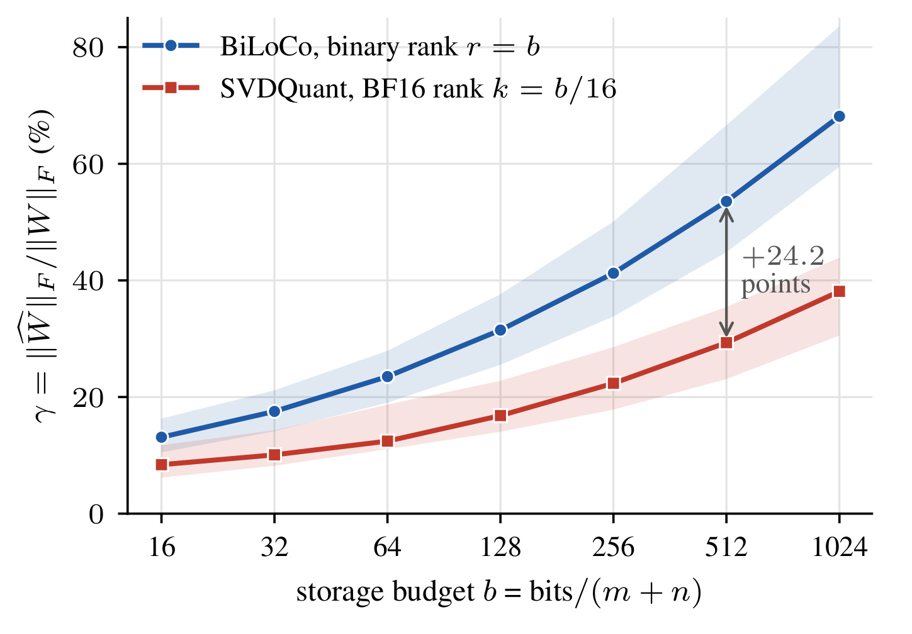
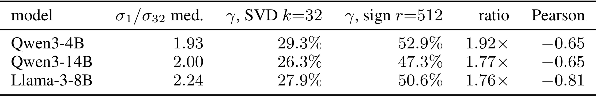
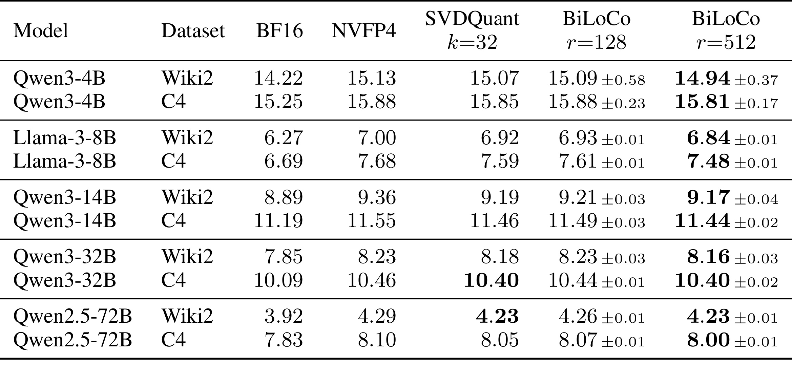
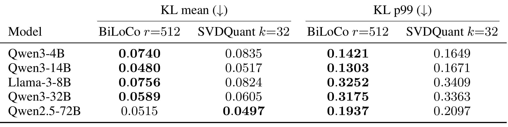
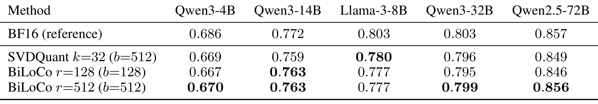
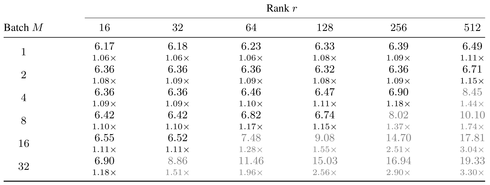
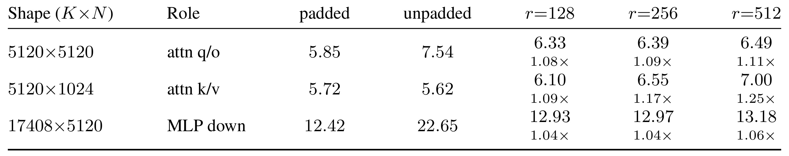

BiLoCo：用二值低秩校正补回 FP4 量化损失
David Jin、Beshr IslamBouli、Tarushii Goel、Han Guo 与 Yoon Kim 来自麻省理工学院，前两位为共同第一作者。论文 BiLoCo: Binary Low-Rank Corrections for Post-Training Quantization 于 2026 年 10 月 23 日公开，研究大模型推理中的 FP4 后训练量化。论文入口。官方代码 于本次 2026 年 10 月 27 日核验可访问，包含分解、全模型 fake-quant 质量评估和 B300 融合内核实现；本笔记未在本机复现 GPU 实验。以下依据完整主文及附录解读，区分矩阵代理指标、模型任务质量和单算子延迟。
直接把大模型权重和激活量化为 FP4 仍会损失准确率。高精度低秩校正可以补偿误差，但每个秩分量占用较多存储，而且与主 FP4 矩阵乘争用同一组 tensor cores；能否让校正分支使用空闲的 CUDA cores，同时保留足够的纠错能力？
1. 背景和问题
自回归模型每生成一个 token，都要读取大量线性层权重。当 batch 很小时，一个权重块服务的 token 数量少，权重搬运很难被充分摊薄，所以算子可能先受到显存带宽限制，尚未发挥矩阵乘单元的算力。把权重压到更低位宽可以减少这部分流量，Blackwell 的原生 FP4 tensor core 又使低精度数据能够直接参加矩阵运算。不过，存得少和预测得准是两件事情：如果量化使线性投影产生系统性偏差，后续层会继续处理已经被改变的隐藏状态，最终输出分布、困惑度和下游任务表现都可能变化。这也是本文同时安排三类质量指标的原因。
本文采用的 NVFP4 不是把所有浮点值机械截成四个比特。它沿输入通道每十六个元素组成一组，每个元素用 E2M1 格式编码，组内再共享一个 FP8 缩放因子，整个张量另外有 FP32 缩放。四位编码能表示的幅值非常粗，只有零、零点五、一、一点五、二、三、四和六及其符号。局部存在极大值时，组尺度会受这些值牵引，其他普通元素的有效精度就可能下降。激活也量化时，隐藏状态里的异常通道会造成额外问题。因此，即便硬件很擅长执行 FP4 乘法，也不能推导直接后训练量化能够保住原模型质量。
一种补救是将原权重拆成两部分：大部分留在低精度残差里，少量重要方向留在校正分支里。输入分别经过两条路径，最后相加得到输出。高精度低秩校正不需要保存完整权重矩阵，只需要左右两个因子，其成本随秩线性增加。SVDQuant 在扩散模型中采用过这样的设计：先迁移激活异常值，再用奇异值分解获得高精度低秩部分，剩下的权重用四位存储。它表明少量高精度方向能够改善量化，但其默认形式并不自动适合所有生成任务或所有硬件工作区间。
大语言模型的逐 token 解码与扩散模型的计算形状存在差异。小 batch 解码中，FP4 主路径可能主要在等待 HBM 读取权重，普通 CUDA 运算单元却没有足够工作。若额外校正继续用 BF16 矩阵乘，它自然落到 tensor cores 上，与主路径使用同类单元；若校正算术改成加减，则有机会利用另一组资源。这里的“有机会”依赖真实调度和数据依赖：两个算术单元独立发射指令，不代表任何两个分支都能自动重叠，更不代表等待中间向量和输出合流的成本为零。本文后半部分必须给出融合内核，才把这种资源互补变成可测量主张。
存储也提出另一个选择。同样的字节预算，应该保留少量数值精确的方向，还是容纳更多方向、但让每个方向只有正负符号？标准 SVD 在固定秩下对 Frobenius 误差有很强的性质，但本文固定的是存储量。BF16 的一个向量元素占十六位，而符号只占一位；因此相同的因子预算可以给二值分解约十六倍的秩。二值的单个方向表达能力更弱，却可能用数量抵消精度损失。尤其当权重的前几十个奇异值衰减并不陡峭时，仅截留少量高精度方向可能遗漏很多有用结构，这使增加方向数量成为值得测量的假设。
这个假设不能靠“参数更多”直接证明。符号向量不正交，各秩分量之间可能高度相关，随机选很多符号也可能只是在增加无用分支。它需要找到和当前权重残差相关的符号模式，并处理不同分量之间的重叠。此外，低秩部分捕获的矩阵范数越多，也不意味着最终语言建模损失越低：真实网络有非线性、归一化、残差连接，激活分布又不均匀。本文将谱形态诊断放在方法动机里，将困惑度、分布散度和任务准确率放在实验里，正是为了避免把矩阵近似性质冒充模型表现保证。
BiLoCo 的定位由此变得清楚。它保留“FP4 残差加校正”的整体架构，替换校正的表示和执行方式；无需从头训练一个二值语言模型，也不是给原模型增加一个依靠任务标签学习的 LoRA 适配器。左右因子取正负一，另外保留每个秩分量的实数系数。离线阶段用贪心符号剥离构造这些方向，再联合重拟合系数；在线阶段用打包符号完成有符号归约与展开。它的贡献不在宣称整个模型只有一位，而在把已有低秩校正的存储分配与硬件路径一起改变。
还有一个容易混淆的背景是量化范围。权重四位、激活仍用高精度的路线，主要解决权重流量；权重与激活都四位则还要控制激活异常值，并利用对应的原生矩阵乘。本文属于后者，所以不能直接与任意权重四位方案的质量或延迟横比。预平滑通过通道尺度把部分激活异常幅度迁移到权重，随后低秩部分处理平滑后权重的结构；这几个操作的先后次序决定最终残差的分布。如果复现时去掉预平滑或换一种块尺度搜索，得到的结果已经不再只检验校正格式。作者保持这些环节一致，才让二值校正和高精度校正之间的比较更有解释力。
存储归一化也要结合主路径理解。校正是原低位权重之外增加的部分，较多二值方向既可能减少表示误差，也会增加归约次数和展开工作。矩阵大时每项系数占比很小，小矩阵或高秩时却仍须实际计数；增加校正量也不会改变主权重每个十六元素组都要有尺度的事实。由此，固定因子字节、固定总模型字节、固定延迟预算是三种不同实验问题。本文主要回答第一种，并用内核测量补充第三种的局部边界，没有直接给出第二种下最优的全模型配置。
这与大模型服务直接相关，因为解码延迟和吞吐常常由具体投影形状、batch 以及硬件资源决定，而不是由参数量单独决定。对生成式推荐或模型驱动排序而言，若推理骨干也处于小 batch 的逐步生成区间，这种问题设定可能有参考价值；但本文没有推荐任务数据，也没有线上点击率或业务实验，不能把通用语言模型上的结果直接写成推荐收益。本文最值得观察的是一条可检验链条：同预算更多符号方向是否改善量化质量，改善是否可以由融合方式以较小额外延迟提供，以及这一收益在哪些形状和批量下消失。后续所有判断都围绕这三个问题展开。
2. 方法
2.1 同一预算下增加秩：二值因子与 NVFP4 残差
对权重矩阵，BiLoCo 先构造二值低秩部分，再对剩余权重做一次 NVFP4 量化。需要特别区分“原矩阵的低秩分解”和“已量化误差的后补拟合”：Algorithm 1 从原始预处理权重开始剥离，最终量化剥离后的残差。它并非先把完整权重量化完、再对所得误差做完全独立的任务微调。左右符号负责方向，每个分量的系数负责幅度；因子可以保持位打包，系数部署时用 BF16 保存。
符号解释：$W\in\mathbb R^{m\times n}$ 为待量化的线性权重，$C$ 为校正矩阵，$R=W-C$ 为残差，$r$ 为二值秩，$u_i,v_i$ 为左右符号向量，$\alpha_i$ 为该方向的幅度。在线输出是量化主路径与未做 FP4 量化的校正输入路径之和：
符号解释：$x$ 为输入激活，$y$ 为输出，FP4GEMM 使用原生块缩放低精度运算。$v_i^{\top}x$ 只需按符号选择加上或减去各输入，随后乘一次系数，再按 $u_i$ 展开。省去的是逐元素因子乘法；每个分量的幅度缩放仍然存在。它不等于所有算术都变成无乘法，也不等于原模型其他模块被二值化。
符号解释：$B$ 以 bit 计，$k$ 是 BF16 校正秩。二值式中的额外十六来自每个分量一个 BF16 系数。忽略这项且矩阵足够大时，$r\simeq16k$，所以 BF16 秩三十二的因子预算约等于二值秩五百一十二。这个十六倍只针对低秩因子的逐元素编码，不能说整个模型显存缩小十六倍。NVFP4 残差本身约四点五 bit 每权重，另有全局缩放、运行时缓冲、激活和模型其他状态；KV cache 在本文始终保留 BF16。精确部署预算还应检查对齐和缓冲，不能只把理论向量大小相除。
2.2 贪心符号剥离与联合系数重拟合
构造方向时，初始化残差为预处理后的权重。每个秩分量先随机初始化右符号向量，再固定一侧更新另一侧。固定 $v$ 后，选择每个 $u$ 的正负号来最大化与残差的相关性；随后反向更新 $v$。论文默认每个分量交替五步，再取当前方向上的最优标量，把该秩一成分从残差中减掉，继续构造下一个方向。这是一种匹配追踪式过程，利用残差逐次分配表示能力，既没有显式 SVD，也不需要任务标签反向传播。
符号解释：此处 $R$ 是当前剥离残差，$m,n$ 为矩阵行列数，sign 逐坐标产生正负一；遇到零时采用确定性规则。分母 (mn) 来自符号秩一矩阵的 Frobenius 范数平方。随机初始化只决定搜索起点，不能把最终因子称为随机投影，因为后续符号更新已经利用权重结构学习了方向。附录的随机符号对照不执行同样的学习过程，因此能检验收益是否只是来自增加方向数量。
全部方向生成后，只优化单独剥离时求出的系数仍可能留下误差，因为这些方向不是正交基。联合 refit 固定符号，将所有幅度放进一个最小二乘问题；Gram 矩阵用左右向量内积的乘积构成，无需把每个秩一矩阵显式展平成巨大向量。实现加小的 ridge 稳定数值。求解后重新计算残差，再做一次 NVFP4 量化，这使部署权重与最终系数一致。
符号解释：$A\in\mathbb R^{r\times r}$ 为选中方向的 Gram 矩阵，$b$ 为方向与原权重的相关性，$\epsilon I$ 为数值正则项。理论中无正则且满秩时有唯一最小二乘解，Gram 奇异时不能直接假定逆存在。该步骤优化的是权重空间代理目标；附录显示它对 PPL 的增益未必超过符号种子的噪声，因此不能将“矩阵目标不增”翻译为每个任务指标必然提升。
2.3 单步下降与有条件的 cut 范数解释
固定一侧符号时，另一侧的 sign 更新是该离散坐标块的精确最大化，所以双线性目标不会降低。取上述最优幅度后，减去一个秩一分量所减少的 Frobenius 能量有闭式表达。这说明剥离并非任意的压缩启发式，但其保证局限在当前矩阵残差与当前方向，不证明全局最佳符号分解，也没有声称交替五步可以找到最好的离散组合。
符号解释：右侧是选中方向的平方相关性，恒为非负。论文还定义 signed cut 范数为所有符号对的最大双线性值，并假设每一步选到的方向达到最优值固定比例，才推出跨迭代残差界：
符号解释：$t$ 为剥离步，$\rho\in(0,1]$ 是假定的方向质量比例，右边随着步数增长而下降。结论是“这些迭代中至少有一次”的最小值界，不能改成最终残差 cut 范数单调下降。最优 cut 范数计算困难，作者也明确没有证明所用交替启发式满足统一近似比。附录改测可计算的 Frobenius 相对捕获率：
符号解释：$\rho_F$ 是观测到的单步相对相关性，并非直接求出的最优 cut 近似比。六十三个 Qwen3-4B 矩阵、一百二十八步共八千零六十四次更新中，其最小值为零点零一九，起始到末尾的中位数仅温和衰减，这支持搜索在该诊断中仍有进展。这些理论均不界定输出误差、下游准确率或困惑度，质量主张必须交给完整网络实验验证。
2.4 单内核中的异构协同
批量输入下，主路径用 FP4 tensor cores，符号归约和展开用 CUDA cores。先得到每个输入与右符号向量的内积并乘幅度，再将中间向量按照左符号展开，输出在 GEMM epilogue 内直接合入 FP32 累加器，最终写 BF16。下面的原文 Figure 1 展示两条路径及唯一的输出合流点。

Figure 1 上半部分从 BF16 输入产生 FP4 激活，与 NVFP4 残差权重相乘；下半部分仍使用 BF16 输入，通过打包的右符号做有符号归约，乘以 BF16 系数后，再通过左符号展开。这一分工保留校正路径输入精度，不能把两条路径都描述成四位矩阵乘。两者先以 FP32 表示各自结果，最后在同一个 GEMM 的尾处理阶段相加，所以避免先写完整校正输出、再额外读取输出做残差加法。图中的加号表达数据依赖，而不是一个独立启动的 CUDA 加法算子。位打包仍然保留到运行期，读取符号后按位选择加减，使读取量与算术路径同时改变。
真正实现时，CUTLASS 的输出 tile 为一百二十八行、六十四列，小 batch 激活补零到完整行 tile。每个 GEMM CTA 负责一个输出列块，其他空闲 SM 上的 side CTA 计算中间向量；GEMM CTA 的 epilogue warps 在主循环期间等待该向量并展开校正。缓冲中的每个值附带当前 launch 的 epoch tag，消费者可区分本轮与旧值，从而不用额外启动清零内核。展开阶段用共享内存中每四个秩分量一组的查表，将多次符号选择累加转成一次读取。这个安排既有分支之间的等待链，也要求所有相关 CTA 能同时驻留；对于 B300 的一百四十八个 SM，输出列块数量不能超过硬件允许的范围。
因此，融合的含义是减少 launch 和输出访存，并把部分工作放进主路径等待权重的时间窗口；它不使校正计算消失。右符号归约、发布中间量、消费者等待、左符号展开构成串行依赖链，当 batch 与秩的乘积增加，链条会超出 FP4 主循环的可隐藏时间。论文在部分较大批量下让所有 CTA 先计算校正、再执行 GEMM，虽然仍是一次 launch，实际已失去并行覆盖。宽 MLP 的输出 tile 太多时，当前方案甚至不支持。这种边界应与方法框架一同记住，避免只看到“CUDA cores 空闲”就推广到任意工作负载。
3. 实验结果
3.1 同字节预算的结构诊断
谱诊断覆盖 Qwen3-4B、Qwen3-14B 和 Llama-3-8B，每个模型取均匀分布的九层，每层七种投影，共一百八十九个权重矩阵。指标是低秩近似矩阵范数与原矩阵范数之比，而非平方能量占比。比较横轴也以向量存储预算归一化，并不把二值秩与 BF16 秩强行设成相同数值。

Figure 2 的横轴是总 bit 除以矩阵两边维度之和得到的预算，纵轴是低秩部分对原权重的 Frobenius 范数比例。蓝线给二值分解，红线给 BF16 SVD；相同横坐标下蓝线允许约十六倍的秩。数据来自 Qwen3-4B 的六十三个投影，实线是中位数，色带是四分位区间，所以不能把这条曲线看成某个单层的精确误差轨迹。蓝线在全部测试预算上更高，说明“多方向弥补低精度”在这些矩阵上有实测依据；图中标注的二十四点二是百分比点差值，并非模型质量提升百分比。随着预算增大，两类近似都会改善，说明作者利用的是固定预算下的表示交换关系。这个图没有展示量化残差、真实激活加权误差或下游任务，因此它只能解释为什么后续模型实验值得做，不能单凭两条曲线宣布二值校正更可靠。
三种模型是否都具有类似谱形态，需要继续检查 Table 1 的跨家族统计；这里把谱平坦程度和范数捕获并列，帮助区分“某个模型碰巧获益”与“预算分配假设在不同权重上成立”。

Table 1 第一组数值是最大奇异值与第三十二个奇异值的比值，中位数约在一点九三到二点二四，意味着前几个方向并未压倒其余方向。BF16 秩三十二的捕获比例在百分之二十六到二十九，二值秩五百一十二约百分之四十七到五十三。Qwen3-4B 的原始比例为百分之二十九点三和五十二点九；Qwen3-14B 为二十六点三和四十七点三；Llama 为二十七点九和五十点六。最后一列给与谱比的负相关，符合谱越平越有利于更多方向的解释。表里的 ratio 列与两个显示中位数的直接商并不完全一致；主文未进一步展开这里的聚合细节，因此本笔记保留原表，不据此推导额外的比例。它也没有把所有方向说成同等重要，只是显示固定秩截断会遗漏不少矩阵结构。
附录 Table 7 再分二十一组模型与投影类型，二值秩二百五十六在这些分组中的范数捕获均超过 BF16 秩三十二，而向量预算约为其一半。秩一百二十八则并非每一行更好，例如 Qwen3-14B 的 query 和 gate，以及 Llama 的 query 和 gate 有轻微落后。这个细分结果防止把总体中位数误写成所有层、所有预算都优势明显；表征方向的质量与权重谱仍相关，后续按层配置秩可能比统一秩更合适，但本文没有给出这类分配策略的完整验证。
3.2 困惑度与分布偏移
质量实验覆盖四十亿到七百二十亿参数的五个模型。全部使用 SmoothQuant 系数零点五，C4 训练集抽一百二十八条、每条二千零四十八 token 做校准；权重和激活都使用同样的 NVFP4 块尺度搜索。WikiText-2 测试集串接后分成不重叠窗口，C4 验证取固定随机种子的二百五十六个窗口。BiLoCo 主困惑度表是六次符号初始化的均值和标准差；SVDQuant 在给定校准集下是确定性的。六次随机符号并不代表六套校准集，更不代表任务数据或模型训练的六次独立重复。

Table 2 每个模型分两个语料，列中依次有 BF16 原模型、无校正 NVFP4、BF16 秩三十二 SVDQuant、二值秩一百二十八和五百一十二。困惑度越低越好，最后一列与 SVDQuant 具有近似匹配的向量存储量。Llama-3-8B 在 C4 上从纯 NVFP4 的七点六八，经过 SVD 校正变成七点五九，二值秩五百一十二进一步降为七点四八；WikiText-2 则由七点零零、六点九二到六点八四。这些是量化误差的部分恢复，因为 BF16 仍分别为六点六九和六点二七，不能说已经恢复到原模型。Qwen3-14B 的改善小一些，C4 从十一点四六到十一点四四，均值差与种子标准差相近，需要保守解读。
较大模型也没有形成普遍的大幅胜出。Qwen3-32B 的 C4 结果两者都为十点四零；Qwen2.5-72B 的 WikiText-2 两者都为四点二三。另一语料有小幅优势，支持“匹配或改善”的作者措辞，不能写成所有格子显著更好。Qwen3-4B 的符号种子方差尤其值得留意，WikiText-2 上秩五百一十二均值十四点九四、标准差零点三七，而 SVDQuant 为十五点零七，不能仅看加粗均值就声称统计显著。较低秩一百二十八只占约四分之一校正预算，但各模型与语料都略落后于 SVDQuant 秩三十二，最大约零点零五。这说明低秩版本的吸引力来自成本交换，而非同等准确率的严格保证。
此外，这些模型没有统一成相同参数量，也未给出跨模型绝对困惑度比较的理由。比较应沿同一模型、同一语料的一行进行；某模型绝对数值较小，不能据此判断二值校正更适用于它。
PPL 衡量真实 token 的平均对数似然，无法充分揭示概率分布的尾部偏移。因此作者另取二百篇未参与校准的 FineWeb 文档、每篇最多二千零四十八 token，与 BF16 参考分布比较 KL 散度。主文说明均值是所有 token 的汇总，p99 是按文档先平均后的分位统计；不应在转述时把它随意替换成所有 token 的最差百分之一。

Table 3 左半边给 KL 均值，右半边给尾部分位，数值越低表示更接近 BF16 输出分布。在相同校正预算下，二值秩五百一十二的 p99 在五个模型上都更小，例如 Qwen3-14B 从零点一六七一降到零点一三零三，约下降百分之二十二。Llama 的均值从零点零八二四降到零点零七五六，p99 从零点三四零九降到零点三二五二，说明典型文档与尾部文档都出现改善。另一方面，Qwen2.5-72B 的均值是零点零五一五，反而高于 SVDQuant 的零点零四九七，尽管其 p99 更低。尾部改善不能概括成整个分布每个统计量都改善，这也是区别于单看 PPL 的价值。
附录 Table 13 还比较较小的匹配预算：二值秩一百二十八对 BF16 秩八，而不是主表里“二值一百二十八对 BF16 三十二”的不等预算比较。Qwen3-14B 的低预算二值均值零点零五四八，高于 SVD 的零点零五四一；p99 零点二零二六也高于零点一六一八，两项均退步。Qwen3-4B 则均值略差、尾部较好，Llama 两项较好。这组结果表明二值方向数量的收益依赖预算和模型，不能将较高预算下的趋势外推到任意配置，更不能根据谱捕获曲线预先判断所有分布指标。
KL 的方向也有含义：它把 BF16 参考模型作为基准，考察量化模型分布偏离参考分布的程度，并不直接等于正确答案的概率变化。较低 KL 表明行为更像参考模型，但如果参考本身在某项任务出错，保持相似并不会自动提高正确率。文档尾部更好也只说明选定 FineWeb 样本中的偏移受到控制，无法保证交互式长对话、代码生成或其他语域都同样稳定。这些尚需目标数据验证，主表没有覆盖分布外稳健性。
3.3 下游准确率与求解器消融
主文下游指标是 WinoGrande 五样本与 HellaSwag 十样本两项准确率的平均。这与附录五个标准 PTQ 任务的均值不同，且不同任务的归一化准确率口径也有差别。先看主表，可以判断困惑度优势能否延伸到常见离散任务结果。

Table 4 的列是五个模型，行是不同校正方式，准确率越高越好。二值秩五百一十二在四个 Qwen 模型上都略超过 SVDQuant：Qwen3-4B 为零点六七零对零点六六九，Qwen3-14B 为零点七六三对零点七五九，Qwen3-32B 为零点七九九对零点七九六，Qwen2.5-72B 为零点八五六对零点八四九。尤其七百二十亿模型接近 BF16 的零点八五七，说明该配置的任务差距较小。但 Llama-3-8B 是明确反例：二值结果零点七七七，低于 SVD 的零点七八零，而该模型的 PPL 在前表有改善。因此不能把困惑度降低等同于所有任务正确率提升。主表也没有给出每一项准确率的置信区间，小幅差异只能作为观测，不能扩写成稳定业务优势。
秩一百二十八在 Qwen3-14B 上已达到零点七六三，与更高秩一致并超过 SVD，其他模型则略低于 SVD。附录 Table 12 的五任务均值进一步显示非单调性：Qwen3-4B 的 SVD、二值一百二十八、二值五百一十二依次为零点五八三、零点五八三、零点五八六；Qwen3-14B 为零点六四六、零点六四三、零点六五四；Llama 为零点六一六、零点六二四、零点六一三。最后一个模型中较小的二值秩反而最好，再次说明优化矩阵目标和增加秩都没有给任务准确率单调保证。评价部署候选时，需要保留目标任务结果，不能只用单个代理指标选秩。
附录 Table 8 用 Llama 的秩五百一十二比较构造方式，三次符号 seed 的均值表明：随机符号加联合系数重拟合的 WikiText-2 PPL 为七点零零零，几乎等于纯 NVFP4 的六点九九八；学习符号的贪心剥离为六点八四二，加全局 refit 为六点八四三，再做十轮交替优化为六点八三八。C4 对应七点六八四、七点四七五、七点四八零、七点四五九。核心收益来自学到的符号，而非随意加入大量随机方向。全局 refit 的理论作用是修正相关方向的系数，实际质量提升在该秩下没有超出种子噪声；更昂贵优化略改善 C4，也不足以让默认方法必须采用它。
离线构建时间同样在附录拆开报告。Llama-3-8B 的 SVD solver 为一百七十点四秒，总 PTQ 二百二十二秒；贪心二值构造八十六点三秒，总计一百一十六秒；加全局重拟合的 solver 九十一点三秒，总计一百一十八秒。完整交替优化约一千零七十秒 solver、总计一千零九十七秒，成本明显更高。这是同节点上的离线校准与构建成本，不能把它当成在线延迟加速。附录的秩扫描显示 PPL 在一千零二十四和二千零四十八秩还会改善，但其校正存储分别超过默认匹配点两倍和四倍，内核成本也增加，所以默认秩五百一十二是预算选择，非准确率到达极限。
3.4 延迟随批量、秩与投影形状变化
性能测量只针对 B300 的线性投影内核。标准形状输入输出维度均为五千一百二十，batch 从一到三十二。作者在一个 CUDA graph 中捕获六十四次 launch，再做十五次交错测量，报告每次 launch 的中位时间。所有比值使用同次运行、同 tile 的最快 FP4-only 结果，因为小 batch 的时延对数据内容敏感，跨运行相除会引入偏差。标准基线补零到一百二十八行，约五点八到五点九微秒；未补零版本反而慢百分之二十三到三十六，若选后者作基线会夸大融合收益。

Table 5 每个格子上方是微秒，下方是相对同次运行 FP4-only 的倍率，灰色标识超过百分之二十额外开销。batch 为一时，从秩十六到五百一十二，延迟由六点一七到六点四九微秒，对照主路径约慢百分之六到十一；这个结论表达以很小额外时间恢复质量，绝不能写成比 FP4-only 快百分之十一。秩一百二十八、batch 八的实际值是六点七四微秒、一点一五倍；摘要“最多慢百分之二十”是较宽的覆盖上界，不是该格子的精确数值。相同秩到 batch 十六已是一点五五倍，到三十二为二点五六倍，说明随着输入行数增加，校正链条无法继续藏进几乎不变的权重读取时间。
提高秩使低开销窗口进一步收窄。秩二百五十六只有到 batch 四还在约百分之二十以内，秩五百一十二只有到 batch 二；其 batch 四已是一点四四倍，batch 八一点七四倍，batch 三十二三点三零倍。单 launch 依然成立，却与“主校正完全重叠”明显不同。附录等秩对照尤其重要：同一个融合框架里 BF16 秩三十二和二值秩三十二均为六点二零微秒，而相同 BF16 校正不融合则十七点六四微秒。说明大幅减少串行开销来自融合，二值格式主要提供的是固定字节预算可买到更高秩；不能把融合收益全部归功于一位算术速度。用于复现时，应同时控制格式、秩、字节量和融合策略，单一对照不能解开所有因果关系。
仅方形投影还不够，因为模型里 query、key/value、MLP down 的输入输出维度不同。Table 6 使用 Qwen3-14B 的三类受支持形状，在每个形状都重新比较补零与未补零的 FP4-only，选择较快者，避免沿用方形矩阵上总是补零的经验。

Table 6 第一行是五千一百二十乘五千一百二十的 query/output 投影，秩五百一十二约一点一一倍，与上表一致。第二行输出宽度只有一千零二十四，对应 key/value；此时最快基线是未补零的五点六二微秒，而校正秩五百一十二要七点零零微秒，约一点二五倍，超过百分之二十。第三行 MLP down 的输入宽度一万七千四百零八，主路径时间十二点四二微秒，较长的主循环更有机会隐藏校正，三个秩仅慢百分之四到六。于是同样 batch 一、同样二值秩，在窄 key/value 上与 MLP down 上会有完全不同的相对开销。这个形状依赖是本文性能结论的实质约束，不能用单个方形 GEMM 数字描述整个 decoder。
更宽输出的 gate/up 投影没有列入受支持集合，其输出列块数量是二百七十二，超过 B300 的一百四十八个 SM。当前调度要求等待和生产中间量的 CTA 同时运行，宽度使这一资源前提不成立。作者据此认为宽投影与更大 batch 更适合 tensor-core 校正，而非强行沿用当前二值融合调度。整个实验也没有评估 attention、KV cache 搬运、采样、多卡通信和请求调度的端到端吞吐；量化质量的全模型 fake-quant 与特定投影的真实内核测量是两套互补证据，不能在转述时拼成一个已经实现全部层端到端加速的系统。
对这一形状表还应区分绝对时间与相对开销。down 投影的相对比值最小，但绝对时间仍比窄 key/value 大，不能据此说 down 更快；它只是提供更长的重叠窗口。基线在不同形状上也发生变化，逐行重新选择最快版本是必要控制。若在自己的实现里只复制相对倍率而不测最快主路径，就可能把未优化基线造成的空闲时间当成方法的稳定收益。
4. 总结
BiLoCo 给出的最清楚结论是：低秩校正的精度预算可以重新分配，在相近因子存储量下，用更多二值方向取代较少 BF16 方向，有机会获得更好的后训练量化质量。它通过权重谱诊断提出理由，用贪心符号剥离获得非随机方向，再联合解系数，使这种表示能够实际构造。高精度残差与低位宽因子之间的选择并非只有“保留更多浮点数”一条路线；当谱不十分尖锐时，方向覆盖数量本身就是重要资源。这个认识由三类矩阵和五种模型提供支持，但没有变成跨所有层、任务和预算的普遍定律。
算法贡献应与所引用的 signed-cut 分解研究区别开来。单项符号交替与全局系数 refit 延续先前方法，本文将其用于 NVFP4 的加性校正，并设计与 FP4 主路径同 launch 的异构内核。理论说明逐项搜索有代理目标上的进展、固定符号后系数有最小二乘解释，以及附加 oracle 条件下的 cut 范数衰减；它没有证明语言模型损失上界。因此复述创新时，更准确的是表示预算、量化配置与硬件协同的结合，而不是发明了全新的二值分解定理。
实验最有说服力的部分是对照较细。主结果同时给纯 NVFP4、SVD 和不同二值秩；主 PPL 还给六个符号 seed。分布散度、双任务准确率与附录五任务帮助识别代理指标之外的变化。Llama 的任务准确率下降、七百二十亿模型均值 KL 变差、低预算 Qwen3-14B 尾部 KL 变差，都应与正结果保留在一起。它们说明增加秩主要改善某些误差面，而目标任务与模型家族可能提出不同选择要求。若只记住“全模型都更好”，会丢失本文数据最有价值的边界。
系统侧的可取之处是把额外工作放到主路径等待期间，并通过 epilogue 合流避免额外输出读写。位打包带来存储优势，融合带来调度优势，两者在等秩控制中可以分辨。小 batch 的结果支持以较小增量时延恢复部分质量，但当前证据只是 B300 投影算子；到大 batch、窄输出或宽 MLP，收益会缩小甚至失效。实际服务需要测各层形状与 batch 分布，再决定二值或 BF16 校正的路由，不能把单层比值直接乘成 tokens/s 的提升。
旋转兼容性也应保守理解。附录只在 Llama-3-8B、一个 seed 下试 QuaRot 和 SpinQuant；在各自旋转骨干上 BiLoCo 优于 SVD 校正，但旋转后的 FP4-only 本身劣于预平滑骨干。作者推测旋转可能把局部异常值扩散到十六元素缩放块中，导致 NVFP4 的分组尺度受损。结果只能说明二值校正可以叠加到这两种旋转上，不能说旋转是本文建议的最佳前处理，也不能把单模型单 seed 的机制解释当作普遍定论。
后续最值得验证的是面向真实工作负载的组合：逐层用精度和延迟预算选择秩，给超出驻留条件的宽投影保留其他实现，测完整模型在目标数据上的输出质量与总显存，最后测包含 prefill、decode、KV cache 和调度的服务吞吐。本文尚未交付这些端到端结论，也未在推荐业务验证。官方仓库提供分解、fake-quant 质量脚本、融合内核与等秩计时入口，适合从精度和内核分别复现；仅凭代码公开不能当成复现成功。本笔记的判断是，BiLoCo 是一个证据边界相对清楚的量化与内核共同设计案例，真正可迁移的思路是按固定字节和实际硬件空闲资源同时设计校正，而性能数字必须始终携带 batch、秩、投影形状和基线口径。